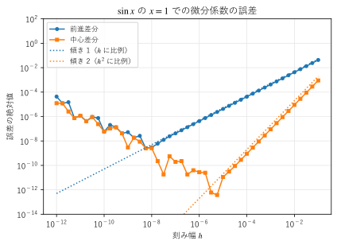
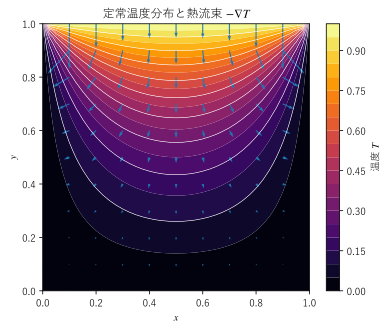
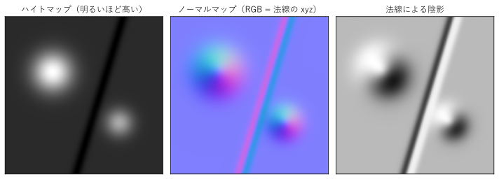
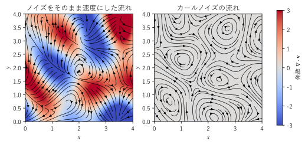
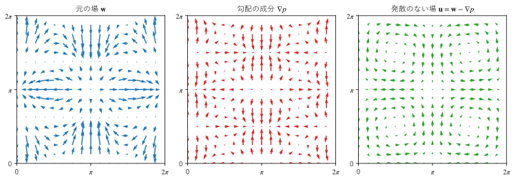

第 18 章 CG と数値計算への応用
実際の問題では、場は式ではなく、格子点の上の数値の並びとして与えられることが多い。この章の前半では、格子上の値から勾配・発散・回転・ラプラシアンを差分で求める方法と、ラプラス方程式を反復法で解く方法を説明する。後半では、コンピューターグラフィックス（CG）で、法線の計算、ノーマルマップ、カールノイズ、流体シミュレーションの圧力投影にベクトル解析がどのように使われているかを見る。
差分による微分
前進差分と中心差分
関数 \(f(x)\) の微分係数は、小さな刻み幅 \(h\) を使って
で近似できる。このように、微分を近くの点での値の差で置き換える方法を差分法という。2 つの近似の精度は、テイラー展開
から分かる。これを代入すると
となる。前進差分の誤差は \(h\) に比例し、中心差分の誤差は \(h^2\) に比例する。このように、テイラー展開を途中で打ち切ったことによる誤差を打ち切り誤差といい、誤差が \(h^p\) に比例するとき、その近似を \(p\) 次の精度という。中心差分は 2 次の精度を持ち、\(h\) を 1/10 にすると誤差はおよそ 1/100 になる。
ただし、\(h\) をいくらでも小さくすればよいわけではない。コンピューターの浮動小数点数は約 16 桁の精度しか持たないので、ほとんど等しい 2 つの数の差をとると有効数字が失われる。この丸め誤差はおよそ \(\epsilon / h\)（\(\epsilon \approx 10^{-16}\)）の大きさで、\(h\) が小さいほど大きくなる。図 27 は、\(f(x) = \sin x\) の \(x = 1\) での微分係数を 2 つの方法で求めたときの誤差である。\(h\) が大きい範囲では打ち切り誤差が支配的で、傾き 1 と傾き 2 の直線に沿って誤差が減る。\(h\) が小さい範囲では丸め誤差が支配的になり、誤差はかえって増える。誤差が最も小さくなる \(h\) は、前進差分では \(10^{-8}\) 程度、中心差分では \(10^{-5}\) 程度である。


図 27 前進差分と中心差分の誤差
h 前進差分の誤差 中心差分の誤差
1e-01 4.294e-02 9.001e-04
1e-02 4.216e-03 9.005e-06
1e-03 4.208e-04 9.005e-08
1e-04 4.207e-05 9.004e-10
\(f''(1) = -\sin 1 \approx -0.841\)、\(f'''(1) = -\cos 1 \approx -0.540\) なので、\(h = 0.1\) での誤差の見積もりは、前進差分が \(0.1 / 2 \times 0.841 \approx 4.2 \times 10^{-2}\)、中心差分が \(0.01 / 6 \times 0.540 \approx 9.0 \times 10^{-4}\) であり、実行結果とよく一致する。
サンプルの全体：ch18_finite_difference.py
2 階微分は、2 つのテイラー展開を足して \(f'\) と \(f'''\) の項を消すと得られる。
この近似の誤差は \(h^2 f''''(x) / 12\) 程度で、2 次の精度を持つ。
格子上の勾配・発散・回転
2 次元の場を、間隔 \(h\) の格子点 \((x_i, y_j)\) での値 \(f_{i,j} = f(x_i, y_j)\) で表す。偏微分は、ほかの変数を固定して差分をとればよい。中心差分を使うと
である。勾配・発散・回転は偏微分の組み合わせなので、すべてこの近似から求められる。
NumPy の np.gradient は、配列の内部の点では中心差分で、端の点では片側の差分で微分を求める。edge_order=2 を指定すると、端の点でも 2 次の精度の差分を使う。注意が必要なのは配列の軸の順序である。np.meshgrid(x, y) で作った 2 次元配列は、行（軸 0）が \(y\)、列（軸 1）が \(x\) に対応する。そのため \(x\) での偏微分は axis=1、\(y\) での偏微分は axis=0 で求める。
ラプラシアンは、2 階微分の近似を \(x\) と \(y\) について足し合わせた 5 点差分
で求める。右辺の形から、第 8 章で見た「ラプラシアンは、まわりの平均とその点の値との差に比例する」という性質が、格子の上でもそのまま成り立っていることが分かる。
次のサンプルは、ベクトル場 \(\bm{F} = (\sin x \cos y, \ \sin x \sin y)\) の発散と回転の \(z\) 成分、スカラー場 \(f = \sin x \cos y\) のラプラシアンを差分で求め、厳密な値
と比べる。
12def divergence(fx: Array, fy: Array, dx: float, dy: float) -> Array:
13 """2 次元のベクトル場 (fx, fy) の発散. 配列の軸 0 が y、軸 1 が x に対応する."""
14 dfx_dx = np.gradient(fx, dx, axis=1, edge_order=2)
15 dfy_dy = np.gradient(fy, dy, axis=0, edge_order=2)
16 return dfx_dx + dfy_dy
19def curl_z(fx: Array, fy: Array, dx: float, dy: float) -> Array:
20 """2 次元のベクトル場 (fx, fy) の回転の z 成分 dFy/dx - dFx/dy."""
21 dfy_dx = np.gradient(fy, dx, axis=1, edge_order=2)
22 dfx_dy = np.gradient(fx, dy, axis=0, edge_order=2)
23 return dfy_dx - dfx_dy
26def laplacian(f: Array, dx: float, dy: float) -> Array:
27 """5 点差分によるラプラシアン. 外周の格子点では求めず 0 とする."""
28 lap = np.zeros_like(f)
29 lap[1:-1, 1:-1] = ((f[1:-1, 2:] - 2.0 * f[1:-1, 1:-1] + f[1:-1, :-2]) / dx**2
30 + (f[2:, 1:-1] - 2.0 * f[1:-1, 1:-1] + f[:-2, 1:-1]) / dy**2)
31 return lap
n 発散の誤差 回転の誤差 ラプラシアンの誤差
21 3.682e-03 3.446e-03 1.657e-03
41 9.277e-04 8.556e-04 4.160e-04
81 2.325e-04 2.129e-04 1.041e-04
161 5.816e-05 5.307e-05 2.604e-05
格子点の数 \(n\) を 2 倍にすると間隔 \(h\) はほぼ半分になり、誤差はおよそ 1/4 になる。どの量も 2 次の精度で求められていることが分かる。
サンプルの全体：ch18_np_gradient.py
ラプラス方程式を反復法で解く
離散化とヤコビ法
第 17 章で見たように、定常状態の温度分布はラプラス方程式 \(\nabla^2 T = 0\) を満たす。正方形の板の上の辺を温度 1、ほかの 3 辺を温度 0 に保ったときの温度分布を求めてみる。
5 点差分でラプラシアンを近似し、それが 0 になるという条件を書くと
となる。各点の温度が上下左右の 4 点の平均に等しい、という条件である。内部の格子点の数だけ未知数と式がある連立一次方程式なので、直接解くこともできるが、ここでは最も単純な反復法であるヤコビ法を使う。適当な初期値から始めて、すべての内部の点の値を、1 つ前の段階の 4 点の平均で同時に置き換えることを繰り返す。
18def solve() -> tuple[NDArray[np.float64], int]:
19 """ヤコビ法で温度を求め、温度の配列（軸 0 が y、軸 1 が x）と反復回数を返す."""
20 t = np.zeros((N, N))
21 t[-1, 1:-1] = 1.0 # 上の辺（y = 1）
22 for count in range(1, 100_000):
23 new = t.copy()
24 # 内部の各点を、上下左右の 4 点の平均で置き換える
25 new[1:-1, 1:-1] = 0.25 * (t[1:-1, 2:] + t[1:-1, :-2] + t[2:, 1:-1] + t[:-2, 1:-1])
26 change = np.max(np.abs(new - t))
27 t = new
28 if change < TOLERANCE:
29 return t, count
30 raise RuntimeError("収束しなかった")
配列のスライスを使うと、内部のすべての点の更新を 1 行で書ける。t[1:-1, 2:] は各点の右隣、t[1:-1, :-2] は左隣の値を並べた配列である。


図 28 ヤコビ法で求めた定常温度分布と熱流束
図 28 の矢印は、第 17 章のフーリエの法則に従う熱流束の向き \(-\nabla T\) であり、等温線（白い線）に直交している。熱は温度 1 の辺から入り、温度 0 の 3 辺へ流れ出る。
反復回数: 4548
中心の温度: 0.250000
板の中心の温度は、ちょうど 0.25 になるはずである。理由は次のとおりである。この問題を 90° ずつ回転させた 4 つの問題（温度 1 の辺が上、右、下、左にあるもの）を考えると、それぞれの解の和は、4 辺すべてが温度 1 の問題の解になる。その解はどこでも温度 1 である。中心は 4 つの問題で同じ位置にあり、対称性から 4 つの解の中心の温度は等しいので、それぞれ 1/4 である。この議論は差分で近似した方程式についてもそのまま成り立つので、数値解の中心の温度も 0.25 になる。
サンプルの全体：ch18_jacobi_laplace.py
反復の止め方と速さ
このサンプルでは、1 回の反復での変化の最大値が \(10^{-9}\) より小さくなったら止めている。変化が小さいことは、誤差が小さいことと同じではない点に注意する。ヤコビ法は収束が遅いため、1 回の変化が小さくても、正しい解までの距離はその数百倍あることがある。実際、止める基準を \(10^{-7}\) にすると、中心の温度は 0.249968 となり、基準の値よりずっと大きい誤差が残る。
ヤコビ法で必要な反復の回数は、1 辺の格子点の数 \(N\) の 2 乗にほぼ比例して増える。格子を細かくすると急に遅くなるので、実用的には、更新した値をすぐに使うガウス・ザイデル法、それを加速した SOR 法、粗い格子と細かい格子を組み合わせるマルチグリッド法、共役勾配法などを使う。SciPy の scipy.sparse.linalg には、こうした大規模な連立一次方程式の解法が用意されている。
CG での法線
陰関数曲面と SDF
CG で物体に陰影を付けるには、表面の各点での法線ベクトルが必要である。第 5 章で見たように、\(g(x, y, z) = 0\) で表される曲面（陰関数曲面）の法線ベクトルは、勾配 \(\nabla g\) の向きである。単位法線ベクトルは \(\bm{n} = \nabla g / |\nabla g|\) で求める。
レイマーチングと呼ばれる描画の手法では、物体を符号付き距離関数（SDF、signed distance function）で表すことが多い。SDF \(d(\bm{r})\) は、点 \(\bm{r}\) から物体の表面までの距離を、物体の外側では正、内側では負の符号を付けて表した関数である。物体の表面は等値面 \(d = 0\) である。たとえば中心 \(\bm{c}\)、半径 \(R\) の球の SDF は \(d(\bm{r}) = |\bm{r} - \bm{c}| - R\) で、その勾配は \(\nabla d = (\bm{r} - \bm{c}) / |\bm{r} - \bm{c}|\) となり、確かに球の外向きの単位法線ベクトルになる。一般に SDF は \(|\nabla d| = 1\) を満たすので、勾配がそのまま単位法線ベクトルになる。
複雑な形の SDF では勾配の式を求めるのが面倒なので、中心差分で数値的に求めることが多い。
1import numpy as np
2
3
4def sdf_normal(sdf, p, h=1e-4):
5 """SDF の勾配を中心差分で求め、単位法線ベクトルを返す."""
6 ex, ey, ez = np.eye(3) * h
7 grad = np.array([
8 sdf(p + ex) - sdf(p - ex),
9 sdf(p + ey) - sdf(p - ey),
10 sdf(p + ez) - sdf(p - ez),
11 ]) / (2 * h)
12 return grad / np.linalg.norm(grad)
GLSL などのシェーダーでも同じ考え方で、1 点の法線を求めるために SDF を 6 回（工夫すると 4 回）評価する。
ノーマルマップ
細かい凹凸を持つ表面を、ポリゴンを細かく分割せずに表現する方法として、ノーマルマップがある。表面の高さの分布（ハイトマップ）\(z = H(x, y)\) を考える。この曲面は \(g(x, y, z) = z - H(x, y) = 0\) の等値面なので、法線ベクトルは
の向きである。各画素で偏微分を差分で求め、正規化した法線ベクトルの各成分 \(n_x, n_y, n_z \in [-1, 1]\) を \((n + 1) / 2\) で \([0, 1]\) に移して RGB の色として保存した画像がノーマルマップである。平らな部分の法線は \((0, 0, 1)\) なので、色は \((0.5, 0.5, 1.0)\) の青紫色になる。ノーマルマップの多くが青紫色に見えるのはこのためである。
描画するときは、ノーマルマップから読み出した法線 \(\bm{n}\) と、光が来る向きの単位ベクトル \(\bm{l}\) の内積 \(\max(\bm{n} \cdot \bm{l}, 0)\) で明るさを決める（ランバート反射）。図 29 は、2 つの山と 1 本の溝を持つハイトマップから、ノーマルマップと陰影を求めたものである。光は左上から当てている。


図 29 ハイトマップ、ノーマルマップ、法線による陰影
28def normals(height: Array, spacing: float) -> Array:
29 """曲面 z = H(x, y) の単位法線ベクトルを、(N, N, 3) の配列で返す.
30
31 曲面は g(x, y, z) = z - H(x, y) = 0 の等値面なので、法線は grad g = (-H_x, -H_y, 1) の向きである。
32 """
33 dH_dy, dH_dx = np.gradient(height, spacing)
34 n = np.stack([-dH_dx, -dH_dy, np.ones_like(height)], axis=-1)
35 result: Array = n / np.linalg.norm(n, axis=-1, keepdims=True)
36 return result
サンプルの全体：ch18_normal_map.py
実際のノーマルマップは、表面に沿った局所的な座標系（接空間）での法線を保存することが多い。また、緑（\(y\) 成分）の向きの約束がソフトウェアによって異なり、上下が反転していることがある。
カールノイズ
発散のない流れを作る
煙や炎、パーティクルの動きを、流体らしく見せたい場合がある。手軽な方法は、滑らかなランダムな関数（ノイズ）で速度の場を作り、パーティクルをその流れに乗せて動かすことである。しかし、2 つの独立なノイズをそのまま速度の \(x\) 成分と \(y\) 成分にすると、発散が 0 にならない。発散が正の場所からはパーティクルが散らばり、負の場所にはパーティクルが集まってしまい、水や空気のような非圧縮の流れには見えない。
そこで、第 8 章の公式 \(\nabla \cdot (\nabla \times \bm{\Psi}) = 0\) を使う。どのようなベクトル場 \(\bm{\Psi}\) でも、その回転の発散は 0 になる。したがって、ノイズで作った \(\bm{\Psi}\) の回転を速度にすれば、発散のない流れが得られる。これをカールノイズという（Bridson らが 2007 年に提案した）。2 次元では、スカラーのノイズ \(\psi(x, y)\) を \(\bm{\Psi} = (0, 0, \psi)\) の \(z\) 成分とみなすと
となる。実際、\(\nabla \cdot \bm{v} = \partial^2 \psi / \partial x \partial y - \partial^2 \psi / \partial y \partial x = 0\) である。また \(\bm{v} \cdot \nabla \psi = \psi_y \psi_x - \psi_x \psi_y = 0\) なので、速度は \(\psi\) の等高線に沿う。この \(\psi\) は、第 16 章のヘルムホルツ分解で現れた流れ関数と同じものである。3 次元では、3 つの独立なノイズを成分とするベクトル場 \(\bm{\Psi}\) の回転を使う。
53def curl_noise_velocity(x: Array, y: Array) -> tuple[Array, Array]:
54 """ノイズ psi を (0, 0, psi) の z 成分とみなし、その回転 (d psi/dy, -d psi/dx) を速度にする."""
55 gx, gy = SmoothNoise(3).gradient(x, y)
56 return gy, -gx
図 30 は、ノイズをそのまま速度にした流れ（左）とカールノイズの流れ（右）を比べたものである。背景の色は発散の値を表す。左の流れでは、赤い場所（発散が正）から流れが湧き出し、青い場所（発散が負）に流れが吸い込まれている。右の流れは発散がどこでも 0 で、流線は途切れることなく渦を巻きながら続いていく。


図 30 ノイズをそのまま速度にした流れとカールノイズの流れ
ノイズをそのまま速度に: 発散の絶対値の最大 = 5.96e+00
カールノイズ: 発散の絶対値の最大 = 9.71e-04
カールノイズの発散は、式の上では厳密に 0 である。実行結果で 0 にならないのは、格子上の値から差分で発散を求めたときの打ち切り誤差のためである。
サンプルの全体：ch18_curl_noise.py
Bridson らの論文では、物体の表面の近くで \(\psi\) を 0 に近づけるように調整し、流れが物体を貫かずに回り込むようにする方法も示されている。
流体シミュレーションの圧力投影
ヘルムホルツ分解の応用
ゲームや映像で使われる流体シミュレーションでは、時間を小さな刻み \(\Delta t\) に分け、1 ステップごとに速度の場を更新する。流れによる運ばれ（移流）や外力の効果を加えて速度を更新すると、その途中の速度の場 \(\bm{w}\) は、一般に発散が 0 にならない。そこで各ステップの最後に、\(\bm{w}\) から発散のない成分だけを取り出す。この操作を圧力投影という。
第 16 章のヘルムホルツ分解によれば、ベクトル場は発散のない成分と勾配の成分の和に分けられる。
両辺の発散をとると \(\nabla \cdot \bm{u} = 0\) なので、\(p\) はポアソン方程式
を満たす。これを解いて \(p\) を求め、\(\bm{u} = \bm{w} - \nabla p\) とすれば、発散のない速度の場が得られる。\(p\) は物理的には圧力に \(\Delta t / \rho\)（\(\rho\) は流体の密度で、円柱座標の \(\rho\) とは別）を掛けたものに相当し、圧力の勾配による力が流れの圧縮や膨張を打ち消す働きをしている。これが「圧力投影」という名前の由来である。
実際のシミュレーションでは、壁などの境界条件を考えながら、格子の上でポアソン方程式を解く。その解法には、この章で見たヤコビ法や、共役勾配法などが使われる。ここでは簡単のため、周期境界（右端と左端、上端と下端がつながっている）の正方形で考え、高速フーリエ変換（FFT）を使って解く。周期的な関数を \(e^{i(k_x x + k_y y)}\) の重ね合わせで表すと、\(\partial / \partial x\) は \(i k_x\) を掛けること、ラプラシアンは \(-(k_x^2 + k_y^2)\) を掛けることになるので、ポアソン方程式は各成分の割り算で解ける。
53def project(wx: Array, wy: Array) -> tuple[Array, Array, Array, Array]:
54 """ポアソン方程式 ∇²p = div w を解き、(u_x, u_y, (grad p)_x, (grad p)_y) を返す. u = w - grad p."""
55 kx, ky = wavenumbers()
56 k2 = kx**2 + ky**2
57 k2[0, 0] = 1.0 # 定数成分（波数 0）は p に影響しないので、0 による割り算を避ける
58 div_hat = 1j * kx * np.fft.fft2(wx) + 1j * ky * np.fft.fft2(wy)
59 p_hat = -div_hat / k2 # ラプラシアンは波数空間では -|k|^2 を掛けることになる
60 p_hat[0, 0] = 0.0
61 px = np.real(np.fft.ifft2(1j * kx * p_hat))
62 py = np.real(np.fft.ifft2(1j * ky * p_hat))
63 return wx - px, wy - py, px, py
サンプルでは、発散のない場 \(\bm{u}\)（流れ関数 \(\psi = \sin x \sin y\) から作ったもの）に、勾配の場 \(\nabla \phi\)（\(\phi = 0.8 \cos x \cos 2y\)）を足した場を \(\bm{w}\) とし、そこから \(\bm{u}\) を取り出せるかを確かめる。


図 31 圧力投影によるベクトル場の分解
投影前の発散の最大: 4.000e+00
投影後の発散の最大: 2.285e-14
正しい u との差の最大: 1.221e-15
投影の後の発散は丸め誤差の程度まで小さくなり、取り出した場は元の \(\bm{u}\) と一致している。図 31 の右の場では、流れは 4 つの渦に分かれて回っており、どこにも湧き出しや吸い込みがない。
サンプルの全体：ch18_projection.py
この章のまとめ
中心差分の誤差は \(h^2\) に比例する。\(h\) を小さくしすぎると丸め誤差が大きくなる。
格子上の勾配・発散・回転は
np.gradientで求められる。5 点差分のラプラシアンは、まわりの平均との差に比例する。ラプラス方程式は、各点を 4 点の平均で置き換えるヤコビ法で解ける。変化が小さいことと誤差が小さいことは別である。
CG では、陰関数曲面や SDF、ハイトマップの法線を勾配で求める。
カールノイズは \(\nabla \cdot (\nabla \times \bm{\Psi}) = 0\) を使って発散のない流れを作る。圧力投影はヘルムホルツ分解を使って速度の場から発散を取り除く。